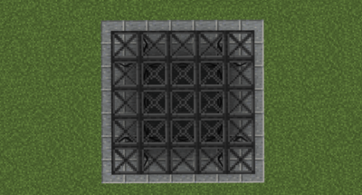
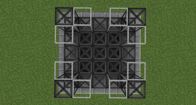
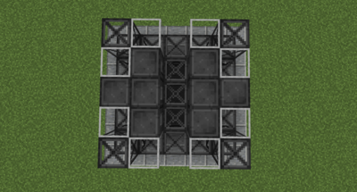
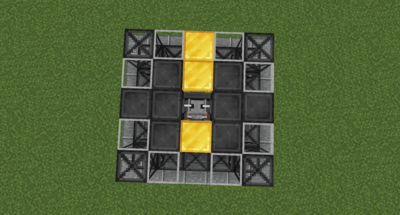
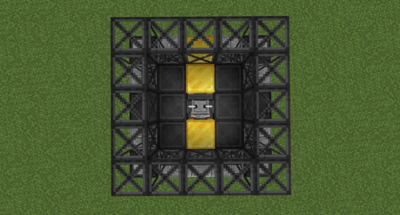
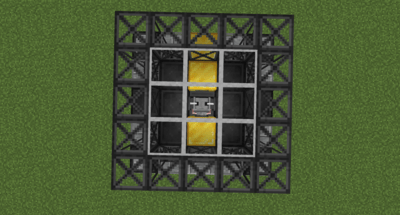
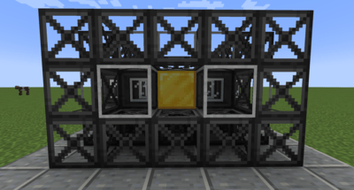
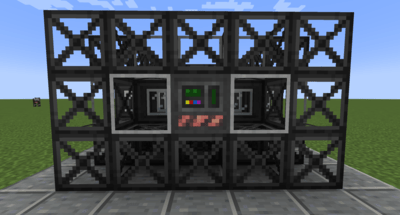

Chambre à électrolyse

The electrolosis chamber is electrodynamics's solution to late game ore processing. while many mods choose to balance their solutions by requiring a finite resource to run, electrodynamics has chosen to make its limiting factor electricity (somewhat in character i might add). with it, you are able to process any metal ore and decuple ([item]) it. this may seem broken on the surface until you read the price tag of [item] to run it. this chapter will walk you through the machine and the decupling process.

Before you can use the electrolosis chamber itself, you will first need to pre-process the metal. this is accomplished by washing the metallic ore with both aqua regia and sulfuric acid in a chemical reactor. while both of these acids are expensive to make, you will observe that you get back the same amount you put into the process. this allows you to create a feedback loop with the acid to re-use it. the result of this feedback process is [item].

The impure mineral fluid solution is what is actually processed by the electrolosis chamber. the machine itself is a 5 x 5 x 3 multiblock. to build it, you will need [item], [item], [item], [item], [item], and the [item] itself. below is how to assemble the multiblock:

Now place the chamber inside the spot created:

Next right-click the chamber with a wrench:

This will form the mulitblock. you will hear the sound of an anvil being placed. to dis-assemble the multiblock, you can either right-click the chamber with a wrench again, or break any of the constituent blocks.

Now that the chamber is formed, we can discuss how it works. upon opening the gui, you will notice that unlike many electrodynamics machines, the chamber cannot accept any upgrades:

Instead, speed is measured by the energy satisfaction of the machine, the rating of which is displayed via the energy tab in the gui. a satisfaction of 100% will result in the chamber processing 1 milibucket of fluid per tick. any greater than this will result in the chamber processing multiple milibuckets of fluid every tick. in short, the more power you throw at it, the faster it will go.